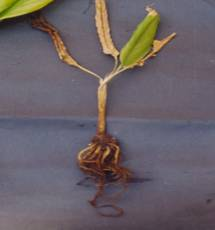

| Home |
| TURMERIC |
MAJOR DISEASES |
| 1. Rhizome Rot |
| 2. Leaf Spot |
| 3. Leaf Blotch |
MINOR DISEASES |
| 4. Dry rot |
| 5. eaf spot |
| 6. Leaf Blight |
| 7. Brown rot |
| Questions |
| Download Notes |
TURMERIC :: MAJOR DISEASE :: RHIZOME ROT
Rhizome Rot - Pythium graminicolum
Symptoms
Starting from the margins the leaves get dried up, collar region of pseudo stem becomes soft and water-soaked and plants collapse. The rhizomes decay as a result of the attack of the fungus.
|  |
Symptoms |
Disease cycle
Pathogen is soil-borne, therefore primary inoculam comes from soil. Infected rhizomes used for seed purpose may also transmit the disease. Irrigation water from diseased field helps in the spread of the disease.
Management
- Seed material should be selected from disease free areas.
- Avoid water stagnation in the field. Light soil may be preferred and drainage facility to be ensured.
- Grow tolerant varieties like Suguna and Sudarshan.
- Crop rotation to be followed.
- Deep plough in summer. Planting is to be done in ridge and furrow method.
- Remove diseased plants and the soil around plants to be drenced with Mancozeb (3gm/lit) or 3gm Ridomil M.Z.
- Spray the crop with Mancozeb (2.5g/lit) or Carbendazim (1g/lit) +1ml sandovit.
- Keep rhizomes in 3g Metalaxyl or 3g Mancozeb mixed in one litre of water for one hour and shade dry before planting.